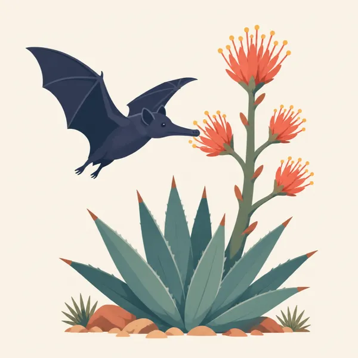
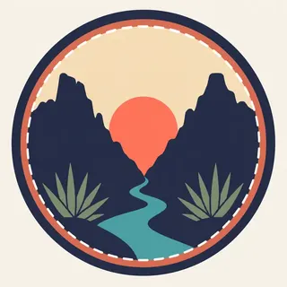

01
Persimmon Gap stone
The natural history page starts the geologic span at 500-million-year-old rocks at Persimmon Gap. Marine sedimentary rocks, continental sedimentary rocks, and volcanic rocks are all inside the boundary.
TrailMark Archive Edition
Texas | Rio Grande
A river canyon, a desert, and mountains share one park, with more kinds of cacti and bats than any other national park.
Archive No. TM-BIBE-022
National Park since 1944
Collection Rio Grande
Park Overview
Congress authorized Big Bend National Park on June 20, 1935, and the park was officially established on June 12, 1944. A deed of conveyance completed that same year handed the land over.
An NPS history of fossils in the parks records that nine-year gap. Ross Maxwell was the first superintendent and served from 1944 to 1952. The same account notes a 1934 visit by Roger Toll to what was then a Texas state park, and fossil quarries worked in the late 1930s before the national park existed.
The natural history page, updated in 2023, is the reason the park is not only a canyon photograph. It holds more than 1,200 plant species, including some 60 cacti, plus 11 amphibians, 56 reptiles, 40 fish, 75 mammals, over 400 birds, and about 3,600 insects.
Emotional Thesis
The archive header shows the Rio Grande between walls, with an agave in the foreground. That is a true picture of the bend. It is not the whole inventory.
NPS says this park has more types of birds, bats, butterflies, ants, scorpions, and cacti than any other national park in the United States. The extra drawing is a bat at an agave. It is an illustration of that claim, not a named species count.
Landscape Highlights
01
The natural history page starts the geologic span at 500-million-year-old rocks at Persimmon Gap. Marine sedimentary rocks, continental sedimentary rocks, and volcanic rocks are all inside the boundary.
02
Boquillas Canyon is named on that page as the place of modern windblown sand dunes. The header painting follows the river between cliffs. The water is the line that makes the bend a border story and a canyon story at once.
03
NPS says evidence of the three great North American mountain-building episodes is found within the park. This essay does not rename those episodes. The point is that the skyline is not one event.
Wildlife
More types of birds, bats, butterflies, ants, scorpions, and cacti than any other U.S. national park. That sentence is the natural history page, not a slogan written here.

01
The counts on that page are more than 1,200 plants, about 60 cacti, 11 amphibians, 56 reptiles, 40 fish, 75 mammals, over 400 birds, and about 3,600 insects.
02
The extra drawing shows a bat at an agave. NPS names the bat diversity. It does not, on the page opened here, identify that drawing as one species.
03
Fossil animals, including Deinosuchus, are not the modern wildlife list. A jaw in the rock is paleontology.
Geology
From 500-million-year-old rocks at Persimmon Gap to modern windblown dunes at Boquillas Canyon, the park preserves what NPS calls tremendous geological diversity.
01
Marine sedimentary rocks, continental sedimentary rocks, and volcanic rocks all occur inside the boundary.
02
Three great North American mountain-building episodes left evidence here. The essay leaves their names to the rocks page rather than guessing them.
03
Fossil bone from the late 1930s quarries is part of this geology. More than 500 fossil bones were collected under William Strain, according to the NPS fossils history.
The river canyons stay the subject when the desert light is lower. Check NPS before a float or a long dirt road. Conditions are not a guess from a painting.
Flowering desert plants, including the agaves in the archive drawing, are the reason to look down as well as at the walls.
This is a Chihuahuan Desert park with a river in it. Heat is the hazard. Water you carry matters more than water you hope to find.
A practical time to separate the three stories: river, desert flat, and mountain. They are one park and they are not the same walk.
Photography
The header works because the river has a scale and the agave says desert. A frame of wall alone could be several parks.
01
River, cactus or agave, and a far range. NPS describes the park as mountains, river, and desert. Leave one out and the picture is incomplete.
02
The extra drawing is a reminder of the bat diversity claim. Do not handle animals or flowers to stage it.
03
The Deinosuchus story is a museum and quarry history. It is not a souvenir.
Field Notes
A canyon this large can hide the fact that the park is famous for how many small things live in it.
TrailMark Field Notes

Badge Story
The mark has to hold a canyon and a desert plant. A cliff with no river, or a cactus with no wall, is a different park.
Warm stone and a green river, the way the header is painted.
An agave or a bat keeps the biological superlative in the picture.
Do not turn the bend into a generic red-rock slot. The Rio Grande is the line.
Archive No.022
LocationRio Grande
ReleaseBend Mark
Stewardship / Safety
Fees, permits, river rules, and road status change. The Park Service page is the place to read them. This essay does not freeze them.
The plant and animal counts are a reason to stay on the route you meant to walk. Off-trail desert crust and nests are not spare ground.
Do not collect fossils, cactus, or river stone. The 1930s quarries were supervised work, not a model for visitors.
Water defines the desert, in the park's own heading. Carry it. Do not treat a spring as a tap.
Boquillas and the other canyons have rules that involve an international river. Read the current NPS notice before you go to the water.
Current conditions, fees, and alerts are on the National Park Service site.
Continue the Archive
Guadalupe Mountains is the Permian reef to the north. White Sands is gypsum. Carlsbad Caverns is the cave in that reef. None of them is the Rio Grande.